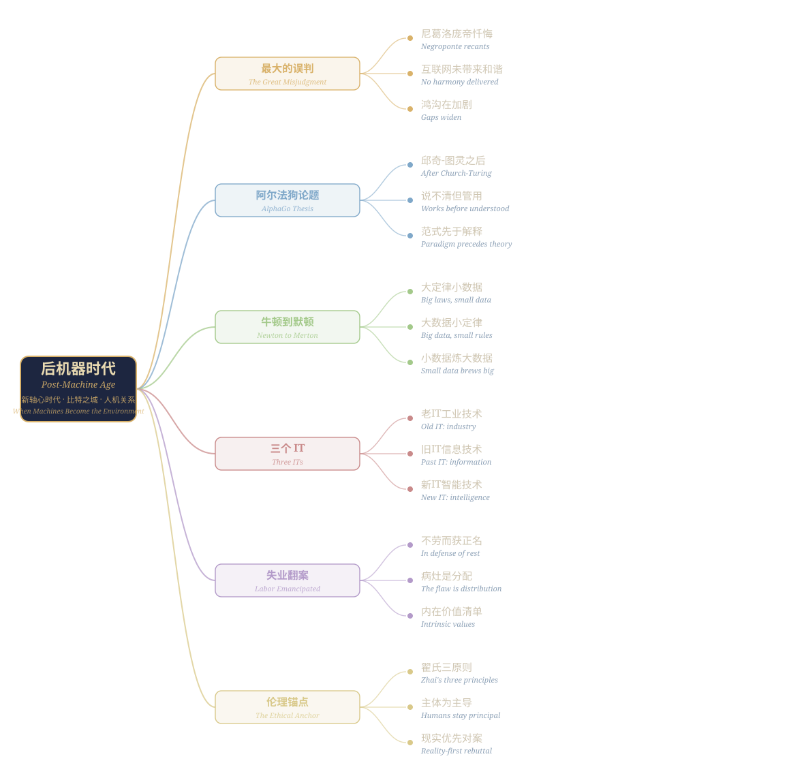

后机器时代
〇 · 书籍信息
基本信息
| 书名 | 《后机器时代》——《公地》文丛的一辑：当机器从「工具」变成「环境」，我们进入的不是机器时代，而是「后机器时代」——问题从「机器能做什么」转向「人与机器如何共同构成社会」 |
|---|---|
| 开篇 | 总序以尼葛洛庞帝的忏悔开场：《数字化生存》中文版 20 周年，作者承认这是「我有生以来最大的误判」——「25 年前，我深信互联网将创造一个更加和谐的世界……但是它没有」：民族主义甚嚣尘上、管制升级、贫富鸿沟加剧 |
| 结构 | 第一章「新轴心时代」（王飞跃：从邱奇-图灵论题到阿尔法狗论题 / 三个 IT / 工业 5.0）→ 第二章「比特之城」（城市与空间的重塑）——穿插失业焦虑、脑机融合、人工智能社会学等多作者论述 |
| 体裁 | 专家文集：控制论学者（平行智能）、哲学家（翟振明）、科学史学者（剑桥版 AI 历史）、复杂系统学者（张江）同台——一场关于智能时代的多声部讨论 |
| 一句话 | 科技范式正从邱奇-图灵论题转向阿尔法狗论题：从「大定律、小数据」到「大数据、小定律」——而人类最该担心的不是机器取代劳动，是分配制度还没理顺。 |
一 · 核心主题总览
文集里的四组母题：① 阿尔法狗论题
阿尔法狗在中国火爆的背后被读出范式转移：「科技时代已从邱奇-图灵论题转入了阿尔法狗论题，从信息技术转入智能技术」——邱奇-图灵论题奠定了计算机与信息产业，「阿尔法狗论题」则宣告：任何特定应用的智能问题都可以如法炮制——从计算到智能的新范式。配套的方法论概括：「从牛顿到默顿」——从「大定律、小数据」的控制方式，到「大数据、小定律」的引导方式。
② 三个 IT 与工业 5.0
IT 的含义被历史化：200 年前的「老」IT 是工业技术，刚过去的「旧」IT 是信息技术，现在的「新」IT 是智能技术——「今后，将是老、旧、新三个 IT 的结合与平行」；哲学底座是波普尔的三个世界（物理、精神、客观知识），载体是「交通、能源、信息、物联和智联这 5 张网」——人类由此进入「以工业 5.0 为特征」的智能时代。
③ 失业焦虑的正面回答
对「机器取代人类造成大量失业」的威胁论，文集给出少见的乐观判词：「『不劳而获』只在有人『劳』而另有人『获』时才是坏事，让所有人都可以『不劳而获』，正是所有技术进步的目的」——人类谋生所需的体力与脑力劳动被机器替代是必然趋势，也正是技术创新追求的目标：问题不在失业，在「分配制度与人类劳作的关系」还没理顺。
④ 内在价值的解放
失业讨论的落点是哲学的：「内在价值却是非工具性的……诸如幸福、自由、正义、尊严、创造等这类基本的内在价值是鲜少有人否定的。这些价值不是为了其他价值或目的而存在，它们本身就具有至高无上的价值」——人工智能接手基础工种，「恰恰可以将人类从劳作谋生的桎梏中解放出来，转而投身到艺术、认知、思想、情爱、创造等实现人的内在价值的活动中去」。
二 · 第一段 新轴心时代 —— 从图灵机到阿尔法狗—— 邱奇-图灵 · 牛顿到默顿 ——
一个论题开创一个时代
作者先讲了一遍计算机的出生证明：70 年前冯·诺依曼读图灵的文章后设计建造世界第一台数字计算机；邱奇的学生克林 1952 年正式提出邱奇-图灵论题——「这个论题到底是怎么回事，谁也说不清，但是计算机因此诞生了，整个信息时代也随之而来」。这个「说不清但管用」的论题给作者灵感：「历史将会证明阿尔法狗也是这么一回事」——围棋的复杂性摆在那里，机器能赢，则任何特定应用的智能问题都可如法炮制：新范式得名「阿尔法狗论题」。
◆ 语言学习 · 概念 · 范式转移
| 邱奇-图灵论题 | 计算时代的奠基信念：一切计算皆可图灵机化 |
|---|---|
| 阿尔法狗论题 | 作者命名：特定领域的智能问题皆可「阿尔法狗化」 |
| 范式转移 | 从计算到智能——信息时代到智能时代的接口 |
| 说不清但管用 | 奠基论题的常态：先赢再用，解释随后 |
句型 ｜ 「这个论题到底是怎么回事，谁也说不清，但是计算机因此诞生了。」——技术史的诚实笔法：改变世界的不是被理解的理论，是被相信的理论——范式先于解释。
从牛顿到默顿
阿尔法狗的方法被提炼成一条公式化的路径：「将小数据（人类的几十万盘对弈情况）转变成大数据（机器模拟所生成的几千万盘对弈情况），再用智能的方法把大数据转变成小定律、小规则、精准对弈策略知识——这就是智能决策之路，是未来智能算法的生成之道」。命名借了两位学者：「从牛顿到默顿」——牛顿时頼「大定律、小数据」的控制方式，默顿时代「大数据、小定律」的引导方式：默顿是社会学之父，他给出的不是物理定律，是社会规律——智能时代的知识形态，更像社会学而非物理学。
◆ 语言学习 · 概念 · 知识形态
| 小数据→大数据→小定律 | 智能算法的生成三段式 |
|---|---|
| 牛顿时頼 | 大定律、小数据：经典科学的知识形态 |
| 默顿时代 | 大数据、小定律：智能时代的知识形态 |
| 平行学习 | 描述学习 + 预测学习 + 引导学习的组合 |
习语 ｜ 「从牛顿到默顿。」——五个字的时代判断：知识的生产方式换了姓氏——定律不再是稀缺品，数据才是：智能时代的物理学家更像社会学家。
三 · 第二段 三个 IT —— 工业 5.0 的坐标系—— 老旧新 · 波普尔三世界 ——
IT 的三次变身
「阿尔法狗出现之后，时代变了，IT 的含义也变了」——作者给出三个 IT 的编年：200 年前的「老」IT 即工业技术（Industrial Technology），刚过去的「旧」IT 即信息技术（Information Technology），现在的「新」IT 即智能技术（Intelligent Technology）——「今后，将是老、旧、新三个 IT 的结合与平行，即：IT = 老 IT + 旧 IT + 新 IT」。谐音梗被正名化：「工厂不再『挨踢』，该『爱替』了——『踢』掉旧产业，『替』上新产业」——产业更替的语法，藏在 IT 的读音里。
◆ 语言学习 · 概念 · 三个 IT
| 老 IT | 工业技术：200 年工业化的主力——物理世界的改造 |
|---|---|
| 旧 IT | 信息技术：信息时代的主力——精神与知识的载体 |
| 新 IT | 智能技术：智能时代的主力——算法与决策 |
| 挨踢/爱替 | IT 读音的产业更替学：踢掉旧产业，替上新产业 |
句型 ｜ 「IT = 老 IT + 旧 IT + 新 IT。」——公式化收束三个时代：不是新替旧，是三代同堂：蒸汽机没有退休，只是不再是主角——技术史的真相是叠加而非替换。
波普尔的三个世界与五张网
三个 IT 的哲学地基被追溯到波普尔：「现实是由物理、精神、客观知识（或知理、智理、虚理）三个世界组成的」——老、旧、新三个 IT 分别是这三个世界的主要技术手段；三个世界又由「交通、能源、信息、物联和智联这 5 张网结成的一个整体，由此产生了三个驱动轴心，开创了三个平行的轴心时代，人类也因此自然地进入以工业 5.0 为特征的……智能时代」。与工业 4.0 的分界也被点破：同样的字母 ICT 与 CPS，在 4.0 里 I 是信息、C 是通信；在 5.0 里它们被重新读成智能时代的字母——技术没变，读法变了。
◆ 语言学习 · 概念 · 工业 5.0
| 波普尔三个世界 | 物理 · 精神 · 客观知识——三个 IT 的哲学户口 |
|---|---|
| 五张网 | 交通 · 能源 · 信息 · 物联 · 智联：三个世界的连接组织 |
| 平行轴心时代 | 三个世界各有一个轴心——轴心时代的复数化 |
| 工业 5.0 | 智能科学 · 技术 · 产业 · 经济 · 社会的总称 |
习语 ｜ 「人类也因此自然地进入以工业 5.0 为特征的智能时代。」——「自然地」三字最值得咀嚼：作者笔下的智能时代不是宣布出来的，是长出来的——技术史从不需要发布会，只需要积累。
四 · 第三段 失业的焦虑 —— 内在价值的解放—— 不劳而获 · 分配制度 ——
为「不劳而获」正名
面对「AI 取代劳动力造成大量失业」的威胁论，作者的回应惊世骇俗又逻辑自洽：「这类忧虑实则是对人类内在价值的误读——『不劳而获』只在有人『劳』而另有人『获』时才是坏事，让所有人都可以『不劳而获』，正是所有技术进步的目的」——「人类谋生所需的体力劳动和脑力劳动被机器替代是必然趋势，这也是所有经济发展、技术创新所追求的主要目标。由此看来，人工智能取代人类劳动，我们应该拍手叫好才是」。真正的隐患被指认：「只要我们的分配制度与人类劳作的关系理顺了，人类就不会因为失业而丧失了生活的意义」。
◆ 语言学习 · 概念 · 劳作解放
| 不劳而获的翻案 | 普遍的不劳而获 = 技术进步的目的——分配问题遮蔽了它 |
|---|---|
| 威胁论的误读 | 失业焦虑的错误前提：劳作=人的价值 |
| 分配制度 | 真正的病灶：劳与获的关系未理顺 |
| 拍手叫好 | 对机器替代的立场翻转：该庆祝而非恐慌 |
句型 ｜ 「让所有人都可以『不劳而获』，正是所有技术进步的目的。」——全书最锋利的价值反转：「不劳而获」从贬义词被重新登记为愿景——它唯一的罪恶形态，是「有人不劳、有人不获」。
内在价值清单
解放的方向被哲学化：「一个人为了购买食物让自己生存下去而不得不从事一份枯燥乏味的工作，这种工作没有任何独立的价值，其价值完全是工具性的、附属于生存需要的。但是，内在价值却是非工具性的」——幸福、自由、正义、尊严、创造被列为「本身就具有至高无上的价值」的清单。结论是乐观的分工：「人工智能取代人类劳动力从事基础工种的劳动，恰恰可以将人类从劳作谋生的桎梏中解放出来，转而投身到艺术、认知、思想、情爱、创造等实现人的内在价值的活动中去」——机器拿走工具价值，还给人类内在价值：前提是分配跟上。
◆ 语言学习 · 概念 · 内在价值
| 工具价值 | 为生存而劳作的价值——附属性的、可被替代的 |
|---|---|
| 内在价值 | 幸福自由正义尊严创造：非工具性的自我目的 |
| 劳作的桎梏 | 谋生对人的束缚——技术解放的对象 |
| 价值清单 | 哲学家争论千年仍公认的最低共识 |
习语 ｜ 「这些价值不是为了其他价值或目的而存在，它们本身就具有至高无上的价值。」——哲学定义的直接引用：内在价值的检验法只有一条：它是不是为了别的什么而存在——凡是「为了」，都是工具；凡是「本身」，才是目的。
五 · 第四段 更危险的事 —— 脑机融合与伦理—— 翟氏三原则 · 比特之城 ——
脑机融合比 AI 更危险吗
文集把「AI 觉醒威胁论」（西部世界、黑镜式的想象）放到一边，指出更切近的议题：「脑机融合比人工智能更危险吗？」——哲学家翟振明重申「翟氏三原则」，即三条初始状态的非对称原则：第一，从客体到主体这个方向，信息越畅通越好，控制信号阻滞度越高越好；第二，从主体到客体这个方向，控制信号越畅通越好，信息密封度越高越好；第三，以上两条的松动调节，以最严苛的程序保证各个主体为主导。与之对话的陈晓平教授针锋相对：提出「现实世界优先原则」，派生「虚拟局部化、虚拟自愿、虚拟无害」三原则——两套原则的分歧点只有一个：虚拟世界要不要服从现实世界的优先级。
◆ 语言学习 · 概念 · 人机伦理
| 翟氏三原则 | 人机关系的非对称原则：信息与控制的方向性 |
|---|---|
| 主体为主导 | 原则三：一切松动的底线——人保持主导 |
| 现实优先原则 | 陈晓平的对案：现实世界优先于虚拟 |
| 虚拟无害 | 虚拟局部化 · 自愿 · 无害：虚拟世界的三条底线 |
句型 ｜ 「以最严苛的程序保证各个主体为主导。」——人机伦理的第一铁律：技术可以越来越像人，控制权不可以越来越像机器——主导权是伦理的最后锚点。
比特之城与人工智能社会学
第二章「比特之城」把镜头从算法拉到城市：「互联网与人工智能对空间的重塑」——当城市被传感器与算法接管，空间的定义从地理变成数据：通勤、治安、治理都被重新编程。北师大的张江副教授「似乎走得更远」，他已在思考「人工智能社会学」——「未来『由人类进行创造性工作而机器完成管理任务的过程』的社会机器正在形成」——人与机器的分工清单开始成形：人类负责创造，机器负责管理——「人工智能社会学其实已与人无关，而是关乎人工智能」这句话悬在文集末尾，成为留给后机器时代的开放题。
◆ 语言学习 · 概念 · 社会机器
| 比特之城 | 被数据重塑的城市空间——地理让位于信息 |
|---|---|
| 人工智能社会学 | 张江命题：关于 AI 的社会学——研究对象已不在人 |
| 社会机器 | 人类创造 + 机器管理的新分工形态 |
| 开放题 | 文集的结尾姿态：不给结论，给议程 |
习语 ｜ 「人类进行创造性工作而机器完成管理任务。」——分工清单的第一行：这不是未来学家的口号，是正在起草的职位说明书——后机器时代的劳动市场，从这一行字开始改写。
六 · 人物图鉴与成长弧线—— 主角配角 · 一张表看穿 ——
主要人物
胡泳 / 王俊秀——《公地》文丛主编——以尼葛洛庞帝的忏悔开场：为数字乐观主义三十年后的账单立此存照——文集的基调由此定为「不吹不恐」
王飞跃——维纳奖得主、平行智能学者——「阿尔法狗论题」「从牛顿到默顿」「三个 IT」的提出者：全书的范式框架几乎由他一人搭建
尼葛洛庞帝——《数字化生存》作者——「我有生以来最大的误判」：数字乐观主义者的自我修正——文集第一证人
翟振明——哲学家——「翟氏三原则」的作者：把脑机融合的伦理从科幻拉回程序——「主体为主导」是他的最后锚点
次要人物（功能位）
| 张江 | 北师大复杂系统学者——「人工智能社会学」的提出者：研究方向「已与人无关，而是关乎人工智能」——文集最远的眺望 |
|---|---|
| 陈晓平 | 华南师大教授——「现实世界优先原则」的对案者：与翟振明的分歧点在虚拟世界的地位 |
| 刘伟 | 剑桥访问学者——「深度情境感知」：人机融合后的智能——剑桥版 AI 历史的讲述者 |
| 阿尔法狗 | 全书范式转移的催化剂——从棋盘上的胜利者变成论题的命名者：它的历史地位由王飞跃提前授予 |
七 · 主题与象征—— 每个道具都在说话 ——
| 忏悔 ↔ 三十年 | 尼葛洛庞帝的误判——乐观主义的账单：技术从不兑现它承诺的和諧，只兑现它没承诺的意外 |
|---|---|
| 棋盘 ↔ 论题 | 阿尔法狗的胜负——一场棋局升级成一个论题：范式的命名权归赢家 |
| 牛顿 ↔ 默顿 | 大定律小数据 → 大数据小定律——知识形态的改朝换代 |
| 三个世界 ↔ 三个 IT | 波普尔的哲学地图——每张地图配一种技术：哲学为技术保管户口 |
| 主体 ↔ 主导 | 翟氏三原则的锚——机器可以接管一切，除了「谁是主体」这个问题 |
八 · 写作手法赏析—— 怎么写，就能怎么学 ——
① 忏悔开场
乐观主义者的自我修正——文集避免了AI 文集常见的两种病：吹捧症与恐慌症
② 论题命名法
阿尔法狗论题 / 牛顿到默顿——用可传播的概念给复杂范式起名：学术观点的营销学
③ 多声部对话
翟振明 vs 陈晓平的原则交锋——文集保留了分歧：伦理问题不设裁判
④ 哲学托底
波普尔三个世界托住三个 IT——技术叙事全部接回哲学谱系：观点不悬空
九 · 名段欣赏—— 原文精读 · 逐段赏析 ——
十 · 金句摘录—— 14 条 · 中英对照 · 带出处 ——
"25年前，我深信互联网将创造一个更加和谐的世界，促进全球达成共识，乃至实现世界和平。但是它没有，至少尚未发生。"—— 总序 · 尼葛洛庞帝
"真实的情况是民族主义甚嚣尘上，管制在升级，贫富鸿沟在加剧。"—— 总序 · 尼葛洛庞帝
"科技时代已从邱奇-图灵论题转入了阿尔法狗论题，从信息技术转入智能技术。"—— 第一章 · 王飞跃
"这个论题到底是怎么回事，谁也说不清，但是计算机因此诞生了，整个信息时代也随之而来。"—— 第一章
"工厂不再「挨踢」，该「爱替」了。也就是说，「踢」掉旧产业，「替」上新产业。"—— 第一章
"阿尔法狗展示了如何从问题的一般规律出发，将小数据转变成大数据，再用智能的方法把大数据转变成小定律、小规则、精准对弈策略知识。"—— 第一章
"从牛顿时代「大定律、小数据」式的控制方式，到默顿时代「大数据、小定律」式的引导方式。"—— 第一章
"今后，将是老、旧、新三个IT的结合与平行，即：IT=老IT+旧IT+新IT。"—— 第一章
"现实是由物理、精神、客观知识三个世界组成的。"—— 第一章 · 引波普尔
"交通、能源、信息、物联和智联这5张网结成的一个整体。"—— 第一章
"人类也因此自然地进入以工业5.0为特征的智能时代。"—— 第一章
"「不劳而获」只在有人「劳」而另有人「获」时才是坏事，让所有人都可以「不劳而获」，正是所有技术进步的目的。"—— 失业论
"人工智能取代人类劳动力从事基础工种的劳动，恰恰可以将人类从劳作谋生的桎梏中解放出来。"—— 失业论
"以上两条的松动调节，以最严苛的程序保证各个主体为主导。"—— 翟氏三原则
十一 · 拓展阅读—— 原文 · 词条 · 译文 ——
十二 · 个人感悟与心得—— 三点心得 ——
三点感悟
① 对乐观保持记账习惯
尼葛洛庞帝的忏悔是最好的示范：每隔几年把自己对技术的预测翻出来结一次账——记账的人 correction 得快，不记账的人误判会复利。
② 把失业焦虑改写成分配议题
「不劳而获」的翻案给出思考框架：你担心机器抢工作的那一刻，先问一句「分配制度准备好了吗」——个人的对应动作是尽早建立不依赖单一工资的收入结构。
③ 守住「主导权」这条线
翟氏三原则的最后一款是普通人也用得上：凡是把「最终决定权」交给系统的场景（投资、健康、教育），都要设置最严苛的人工确认程序——主导权是伦理问题，也是风险管理问题。
后机器时代的「后」，不是机器时代结束了，是「机器只是机器」的时代结束了：从这一页起，机器成为环境的组成部分——而人要保住的那条线，王飞跃用三个 IT 说完，翟振明用一句「主体为主导」钉牢。
十三 · 一页速查（复习用）
| 范式转移 | 邱奇-图灵论题 → 阿尔法狗论题：从计算到智能的新范式 |
|---|---|
| 牛顿到默顿 | 小数据→大数据→小定律：知识形态从「大定律」换姓「大数据」 |
| 三个 IT | 工业技术 / 信息技术 / 智能技术——波普尔三个世界的技术手段 |
| 失业翻案 | 普遍的不劳而获是技术进步的目的：病灶在分配制度 |
| 伦理锚点 | 脑机融合比 AI 更近：翟氏三原则以「主体为主导」收底 |
十四 · 全书思维导图—— 一图纵览 ——

一图纵览全书骨架 · 中英双语对照 · 手机端可左右滑动查看全图